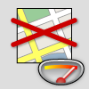

©2010 Google -
Code Home -
Terms of Service -
Privacy Policy -
Site Directory
Google Code offered in:
English -
Español -
日本語 -
한국어 -
Português -
Pусский -
中文(简体) -
中文(繁體)
Static Maps API
Maps JavaScript API V3
Maps Javascript API V2
(Deprecated API)
Maps API for Flash
Maps Data API
(Deprecated API)
Earth API
Local Search API
(Deprecated API)
Includes enterprise licensing and support
Static Maps API V2 Developer Guide
Welcome to the developer documentation for the Google Static Maps API! The Google Static Maps API lets you embed a Google Maps image on your webpage without requiring JavaScript or any dynamic page loading. The Google Static Map service creates your map based on URL parameters sent through a standard HTTP request and returns the map as an image you can display on your web page.
Note: The Google Static
Maps API no longer requires a Maps API key!
(Google Maps API
Premier customers should instead sign their URLs using a new
cryptographic key which will be sent to you. See the
Premier documentation for more information.)
New! The Google Static Maps service now supports custom styled maps!
If you just want to quickly change your existing Static Maps URLs to use the new API, consult this Upgrade Guide.
A Quick Example
The following example contains the URL of a static map image of downtown New York City, which is displayed below:
# You can copy the URL from the image below, however. # http://maps.google.com/maps/api/staticmap?center=Brooklyn+Bridge,New+York,NY&zoom=14&size=512x512&maptype=roadmap &markers=color:blue|label:S|40.702147,-74.015794&markers=color:green|label:G|40.711614,-74.012318 &markers=color:red|color:red|label:C|40.718217,-73.998284&sensor=false
Notice that you don't need to do anything "special" to get this image to
show up on the page. No JavaScript is required. All we needed to do was create
a URL, and place it within an <img> tag. You can place a
Google static map anywhere on your webpage where you can place an image.
Contents
Audience
This document is intended for website and mobile developers who want to include Google Static Maps API images within a webpage. It provides an introduction to using the API and reference material on the available parameters.
Usage Limits
Use of the Google Static Maps API is subject to a query limit of 1000 unique (different) image requests per viewer per day. Since this restriction is a quota per viewer, most developers should not need to worry about exceeding their quota. However, note that we enforce an additional request rate limit to prevent abuse of the service. Requests of identical images, in general, do not count towards this limit beyond the original request.
If a user exceeds the limit as proscribed above, the following image will be displayed indicating that the quota has been exceeded:

This limit is enforced to prevent abuse and/or repurposing of the Static Maps API, and this limit may be changed in the future without notice. If you exceed the 24-hour limit or otherwise abuse the service, the Static Maps API may stop working for you temporarily. If you continue to exceed this limit, your access to the Static Maps API may be blocked.
Static Map URLs are restricted to 2048 characters in size. In practice, you will probably not have need for URLs longer than this, unless you produce complicated maps with a high number of markers and paths. Note, however, that certain characters may be URL-encoded by browsers and/or services before sending them off to the Static Map service, resulting in increased character usage. For more information, see Building a Valid URL.
Overview
The Google Static Maps API returns an image (either GIF, PNG or JPEG) in response to a HTTP request via a URL. For each request, you can specify the location of the map, the size of the image, the zoom level, the type of map, and the placement of optional markers at locations on the map. You can additionally label your markers using alphanumeric characters, so that you can refer to them in a "key."
You embed a Static Maps API image within a webpage inside an
<img> tag's src attribute. When the webpage is
displayed, the browser requests the image from the the Static Maps API and it
renders within the image location. Note that static maps may only be displayed
within browser content; use of static maps outside of the browser is not
allowed. (Google Maps API
Premier users are waived of this requirement.)
This document describes the required format of Static Maps API URLs and the available parameters. It also points out some tips and tricks in specifying your URLs.
URL Parameters
A Google Static Maps API URL must be of the following form:
http://maps.google.com/maps/api/staticmap?parameters
Certain parameters are required while some are optional. As is standard in
URLs, all parameters are separated using the ampersand (&)
character. The list of parameters and their possible values
are enumerated below.
The Static Maps API defines map images using the following URL parameters:
center(required if markers not present) defines the center of the map, equidistant from all edges of the map. This parameter takes a location as either a comma-separated {latitude,longitude} pair (e.g. "40.714728,-73.998672") or a string address (e.g. "city hall, new york, ny") identifying a unique location on the face of the earth. For more information, see Locations below.zoom(required if markers not present) defines the zoom level of the map, which determines the magnification level of the map. This parameter takes a numerical value corresponding to the zoom level of the region desired. For more information, see zoom levels below.size(required) defines the rectangular dimensions of the map image. This parameter takes a string of the formvaluexvaluewhere horizontal pixels are denoted first while vertical pixels are denoted second. For example,500x400defines a map 500 pixels wide by 400 pixels high. If you create a static map that is 100 pixels wide or smaller, the "Powered by Google" logo is automatically reduced in size.format(optional) defines the format of the resulting image. By default, the Static Maps API creates PNG images. There are several possible formats including GIF, JPEG and PNG types. Which format you use depends on how you intend to present the image. JPEG typically provides greater compression, while GIF and PNG provide greater detail. For more information, see Image Formats.maptype(optional) defines the type of map to construct. There are several possible maptype values, includingroadmap,satellite,hybrid, andterrain. For more information, see Static Maps API Maptypes below.language(optional) defines the language to use for display of labels on map tiles. Note that this parameter is only supported for some country tiles; if the specific language requested is not supported for the tile set, then the default language for that tileset will be used.markers(optional) define one or more markers to attach to the image at specified locations. This parameter takes a single marker definition with parameters separated by the pipe character (|). Multiple markers may be placed within the samemarkersparameter as long as they exhibit the same style; you may add additional markers of differing styles by adding additionalmarkersparameters. Note that if you supply markers for a map, you do not need to specify the (normally required)centerandzoomparameters. For more information, see Static Map Markers below.path(optional) defines a single path of two or more connected points to overlay on the image at specified locations. This parameter takes a string of point definitions separated by the pipe character (|). You may supply additional paths by adding additionalpathparameters. Note that if you supply a path for a map, you do not need to specify the (normally required)centerandzoomparameters. For more information, see Static Map Paths below.visible(optional) specifies one or more locations that should remain visible on the map, though no markers or other indicators will be displayed. Use this parameter to ensure that certain features or map locations are shown on the static map.style(optional) defines a custom style to alter the presentation of a specific feature (road, park, etc.) of the map. This parameter takesfeatureandelementarguments identifying the features to select and a set of style operations to apply to that selection. You may supply multiple styles by adding additionalstyleparameters. For more information, see Styled Maps below.sensor(required) specifies whether the application requesting the static map is using a sensor to determine the user's location. This parameter is required for all static map requests. For more information, see Denoting Sensor Usage below.
Location Parameters:
Map Parameters:
Feature Parameters:
Reporting Parameters:
Parameter Usage
The Static Maps API is relatively easy to use, as it consists solely of a parameterized URL. This section explains how to use these parameters to construct your URLs.
Specifying Locations
The Static Maps API must be able to precisely identify locations on the
map, both to focus the map at the correct location (using the
center parameter) and/or to place any optional placemarks
(using the markers parameter) at locations on the map. The Static
Maps API uses numbers (latitude and longitude values) or strings (addresses)
to specify these locations. These values identify a geocoded
location.
Several parameters (such as the markers and path
parameters) take multiple locations. In those cases, the locations are
separated by the pipe (|) character.
Latitudes and Longitudes
Latitudes and longitudes are defined using numerals within a comma-separated text string that have a precision to 6 decimal places. For example, "40.714728,-73.998672" is a valid geocode value. Precision beyond the 6 decimal places is ignored.
Longitude values are based on their distance from Greenwich, England, home
of the prime meridian. Since Greenwich is situated at 51.477222 latitude, we
can enter a center value of 51.477222,0 to center
the map on Greenwich:
Latitude and longitude values must correspond to a valid location on the
face of the earth. Latitudes can take any value between -90 and
90 while longitude values can take any value between
-180 and 180. If you specify an invalid latitude or
longitude value, your request will be rejected as a bad request.
Addresses
Most people don't speak in latitudes and longitudes; they denote locations using addresses. The process of turning an address into a geographic point is known as geocoding and the Static Maps service can perform geocoding for you if you provide valid addresses.
In any parameter where you may provide a latitude/longitude, you may instead specify a string indicating an address. Google will geocode the address and provide the Static Map service with a latitude/longitude value to use in placing markers or specifying locations. The string should be URL-escaped, so addresses such as "City Hall, New York, NY" should be converted to "City+Hall,New+York,NY", for example.
Note that addresses may reflect either precise locations, such as street addresses, polylines such as named routes, or polygonal areas such as cities, countries, or national parks. For polylinear and polygonal results, the Static Map server will use the center point of the line/area as the address center. If you have doubt about how an address may geocode, you can test out the address using this Geocoding Utility.
The following example generates a static map for Berkeley, CA:
http://maps.google.com/maps/api/staticmap?center=Berkeley,CA&zoom=14&size=400x400&sensor=false
Denoting Sensor Usage
Use of the Google Static Maps API requires that you indicate whether your application is using a "sensor" (such as a GPS locator) to determine the user's location. This is especially important for mobile devices. Applications must pass a required sensor parameter indicating whether or not your application is using a sensor device.
Applications that determine the user's location via a sensor must pass
sensor=true within your Static Maps API request URL. If your
application does not use a sensor, pass sensor=false.
Zoom Levels
Maps on Google Maps have an integer "zoom level" which defines the
resolution of the current view. Zoom levels between 0 (the lowest
zoom level, in which the entire world can be seen on one map) to
21+ (down to individual buildings) are possible within the
default roadmap maps view.
Google Maps sets zoom level 0 to encompass the entire earth.
Each succeeding zoom level doubles the precision in both horizontal and
vertical dimensions. More information on how this is done is available in the
Google Maps API documentation.
Note: not all zoom levels appear at all locations on the earth. Zoom levels vary depending on location, as data in some parts of the globe is more granular than in other locations.
If you send a request for a zoom level in which no map tiles exist, the Static Maps API will return a blank image instead.
The example below requests two maps of Manhattan at the same
center value but at zoom levels 12 and 14, respectively:
http://maps.google.com/maps/api/staticmap?center=40.714728,-73.998672&zoom=12&size=400x400&sensor=false http://maps.google.com/maps/api/staticmap?center=40.714728,-73.998672&zoom=14&size=400x400&sensor=false
Image Sizes
Images may be retrieved in sizes up to 640 by 640 pixels. The
size parameter takes a string with two values separated by the
x character. 640x640 is the largest image size
allowed. Note that the center parameter, combined with the
size parameter implicitly defines the coverage area of the map
image.
The example below requests a "slice" of the earth at the equator at zoom level 1:
http://maps.google.com/maps/api/staticmap?center=0,0&zoom=1&size=400x50&sensor=true_or_false
The example below requests a small map, of size 100 x 100 pixels centered on the same region. Note the smaller Google logo:
Image Formats
Images may be returned in several common web graphics formats: GIF,
JPEG and PNG. The format parameter takes one of the
following values:
png8orpng(default) specifies the 8-bit PNG format.png32specifies the 32-bit PNG format.gifspecifies the GIF format.jpgspecifies the JPEG compression format.jpg-baselinespecifies a non-progressive JPEG compression format.
jpg and jpg-baseline typically provide the
smallest image size, though they do so through "lossy" compression which may
degrade the image. gif, png8 and png32
provide lossless compression.
Most JPEG images are progressive, meaning that they load a coarser image
earlier and refine the image resolution as more data arrives. This allows
images to be loaded quickly in webpages and is the most widespread use of JPEG
currently. However, some uses of JPEG (especially printing) require
non-progressive (baseline) images. In such cases, you may want to use the
jpg-baseline format, which is non-progressive.
Map Types
The Google Static Maps API creates maps in several formats, listed below:
roadmap(default) specifies a standard roadmap image, as is normally shown on the Google Maps website. If nomaptypevalue is specified, the Static Maps API servesroadmaptiles by default.satellitespecifies a satellite image.terrainspecifies a physical relief map image, showing terrain and vegetation.hybridspecifies a hybrid of the satellite and roadmap image, showing a transparent layer of major streets and place names on the satellite image.
You can see the difference between roadmap and terrain types in the code example below.
http://maps.google.com/maps/api/staticmap?center=40.714728,-73.998672&zoom=12&size=400x400&maptype=roadmap&sensor=true_or_false http://maps.google.com/maps/api/staticmap?center=40.714728,-73.998672&zoom=12&size=400x400&maptype=terrain&sensor=true_or_false
Hybrid maps use satellite images and prominent roadmap features to create a combination map. The following examples show satellite and hybrid map types:
http://maps.google.com/maps/api/staticmap?center=40.714728,-73.998672&zoom=12&size=400x400&maptype=satellite&sensor=true_or_false http://maps.google.com/maps/api/staticmap?center=40.714728,-73.998672&zoom=12&size=400x400&maptype=hybrid&sensor=true_or_false
Styled Maps
Styled maps allow you to customize the presentation of the standard Google map styles, changing the visual display of such elements as roads, parks, and built-up areas to reflect a different style than that used in the default map type. These components are known as features and a styled map allows you to select these features and apply visual styles to their display (including hiding them entirely). With these changes, the map can be made to emphasize particular components or complement content within the surrounding page.
A customized "styled" map consists of one or more specified styles,
each indicated through a style parameter within the Static
Map request URL. Additional styles are specified by passing additional
style parameters. A style consists of a selection(s)
and a set of rules to apply to that selection. The rules indicate
what visual modification to make to the selection.
Each style declaration consists of the following arguments,
separated using a pipe ("|") character within the style
declaration:
feature(optional) indicates what features to select for this style modification. (See Map Features below.) If nofeatureargument is passed, all features will be selected.element(optional) indicates what sub-set of the selected features to select. (See Map Elements below.) If noelementargument is passed, all elements of the given feature will be selected.- Any following arguments indicate the rule(s) to apply
to the above selection. All rules are applied in the order in
which they appear within the
styledeclaration. (See Style Rules below.) Any number of rules may follow a feature selection, within the normal URL-length constraints of the Static Maps API.
Note: the style declaration must specify the above arguments
in the order stated. For example, a feature selection with two rules
would appear as show below:
style=feature:featureArgument|element:elementArgument|rule1:rule1Argument|rule2:rule2Argument
Map Features
A map consists of a set of features, such as roads
or parks. The feature types form a category tree, with feature:all
as the root. Some common features are listed
below:
feature:all(default) selects all features of the map.feature:roadselects all roads on the map.feature:landscapeselects all background landscapes on a map, which is often the area between roads, for example. In cities, landscape usually consists of built-up areas.
The full list of features for selection within a map is documented in the Maps Javascript API V3 reference.
Some feature type categories contain sub-categories which are specified
using a dotted notation (landscape.natural or
road.local, for example). If the parent feature
(road, for example) is specified, then styles applied to this
selection will be applied to all roads, including sub-categories.
Map Feature Elements
Additionally, some features on a map typically consist of different
elements. A road, for example, consists of not only the graphical
line (geometry) on the map, but the text denoting its name (labels)
attached the map. Elements within features are selected by declaring
an element argument. The following element argument values
are supported:
element:all(default) selects all elements of that feature.element:geometryselects only geometric elements of that feature.element:labelsselects only textual labels associated with that feature.
If no element argument is passed, styles will be applied to all elements of the feature regardless of element type.
The following style declaration selects the labels for all local
roads:
style=feature:road.local|element:labels
Style Rules
Style rules are formatting options which are applied to the features
and elements specified within each style declaration. Each
style declaration must contain one or more operations separated
using the pipe ("|") character. Each operation specifies its
argument value using the colon (":") character, and all operations
are applied to the selection in the order in which they are specified.
The following operation arguments, and the values that take, are currently supported:
hue(an RGB hex string of format0xRRGGBB) indicates the basic color to apply to the selection. (* See usage note below.)lightness(a floating point value between-100and100) indicates the percentage change in brightness of the element. Negative values increase darkness (where -100 specifies black) while positive values increase brightness (where +100 specifies white).saturation(a floating point value between-100and100) indicates the percentage change in intensity of the basic color to apply to the element.gamma(a floating point value between0.01and10.0, where1.0applies no correction) indicates the amount of gamma correction to apply to the element. Gammas modify the lightness of hues in a non-linear fashion, while unaffecting white or black values. Gammas are typically used to modify the contrast of multiple elements. For example, you could modify the gamma to increase or decrease the contrast between the edges and interiors of elements. Low gamma values (< 1) increase contrast, while high values (> 1) decrease contrast.inverse_lightness:truesimply inverts the existing lightness.visibility(on,off, orsimplified) indicates whether and how the element appears on the map.visibility:simplifiedindicates that the map should simplify the presentation of those elements as it sees fit. (A simplified road structure may show fewer roads, for example.)
Style rules must be applied as separate, distinct operations, and are
applied in the order they appear within the style
declaration. Order is important, as some operations are not commutative. Features
and/or elements that are modified through style operations
(usually) already have existing styles; the operations act on those existing
styles, if present.
Note that we use the
Hue, Saturation, Lightness (HSL) model to denote color within the
styler operations. These operations to define color are common within
graphic design. Hue indicates the basic color, saturation
indicates the intensity of that color, and lightness indicates the
relative amount of white or black in the constituent color. All three
HSL values can be mapped to RGB values (and vice versa).
Gamma
correction acts to modify saturation over the color space, generally
to increase or decrease contrast. Additionally, the HSL model defines color
within a coordinate space where hue indicates the orientation
within a color wheel, while saturation and lightness indicate amplitudes
along different axes. Hues are measured within an RGB color space,
which is similar to most RGB color spaces, except that shades of white and
black are absent.

An RGB Color Wheel
Note: while hue takes
an RGB hex color value, it only uses this value to determine the basic
color (its orientation around the color wheel), not its saturation or
lightness, which are indicated separately as percentage changes. For
example, the hue for pure green may be defined
as hue:0x00ff00 or hue:0x000100 and
both hues will be identical. (Both values point to pure green in
the HSL color model.) RGB hue values which consist
of equal parts Red, Green and Blue — such as hue:0x0000000
(black) and hue:0xffffff (white) and all the pure shades
of grey — do not indicate a hue whatsoever, as none of those values
indicate an orientation in the HSL coordinate space. To indicate
black, white or grey, you must remove all saturation (add
a saturation:-100 operation) and adjust lightness
instead.
Additionally, when modifying existing features which already have a
color scheme, changing a value such as hue does not change
its existing saturation or lightness.
The following example displays a map of Brooklyn where local roads have been changed to bright green and the residential areas have been changed to black:
http://maps.google.com/maps/api/staticmap?sensor=false&size=512x512¢er=Brooklyn&zoom=12&style=feature:road.local|element:geometry|hue:0x00ff00|saturation:100&style=feature:landscape|element:geometry|lightness:-100
The following more complicated example uses several operations and simplifications to approximate the look of a US road atlas:
http://maps.google.com/maps/api/staticmap?sensor=false&size=512x512&zoom=11¢er=Chicago&style=feature:road.highway|element:geometry|hue:0xff0022|saturation:60|lightness:-20&style=feature:road.arterial|element:geometry|hue:0x2200ff|lightness:-40:visibility:simplified|saturation:30&style=feature:road.local|hue:0xf6ff00|saturation:60|gamma:0.7|visibility:simplified&style=feature:water|element:geometry|saturation:40|lightness:40&style=road.highway|element:labels|visibility:on|saturation:98&style=feature:administrative.locality|element:labels|hue:0x0022ff|saturation:50|lightness:-10|gamma:0.9&style=feature:transit.line|element:geometry|hue:0xff0000|visibility:on|lightness:-70
Markers
The markers parameter defines a set of one or more markers at
a set of locations. Each marker defined within a single markers
declaration must exhibit the same visual style; if you wish to display markers
with different styles, you will need to supply multiple markers
parameters with separate style information.
The markers parameter takes set of value assignments
(marker descriptors) of the following format:
markers=markerStyles|markerLocation1|
markerLocation2|... etc.
The set of markerStyles is declared at the beginning of the
markers declaration and consists of zero or more style
descriptors separated by the pipe character (|), followed
by a set of one or more locations also separated by the pipe character
(|). (The pipe character is also %7C in ASCII if you are encoding
your URLs.)
Because both style information and location information is delimited via the pipe character, style information must appear first in any marker descriptor. Once the Static Map server encounters a location in the marker descriptor, all other marker parameters are assumed to be locations as well.
Marker Styles
The set of marker style descriptors is a series of value assignments
separated by the pipe (|) character. This style descriptor
defines the visual attributes to use when displaying the markers within this
marker descriptor. These style descriptors contain the following key/value
assignments:
size:(optional) specifies the size of marker from the set{tiny, mid, small}. If nosizeparameter is set, the marker will appear in its default (normal) size.color:(optional) specifies a 24-bit color (example:color=0xFFFFCC) or a predefined color from the set{black, brown, green, purple, yellow, blue, gray, orange, red, white}.Note that transparencies (specified using 32-bit hex color values) are not supported in markers, though they are supported for paths.
label:(optional) specifies a single uppercase alphanumeric character from the set {A-Z, 0-9}. (The requirement for uppercase characters is new to this version of the API.) Note that default andmidsized markers are the only markers capable of displaying analphanumeric-characterparameter.tinyandsmallmarkers are not capable of displaying an alphanumeric-character.
Note: instead of using these markers, you may wish to use your own custom icon. (For more information, see Custom Icons below.)
Marker Locations
Each marker descriptor must contain a set of one or more locations defining
where to place the marker on the map. These locations may be either specified
as latitude/longitude values or as
addresses. These locations are separated using the
pipe character (|).
The location parameters define the marker's location on the map. If the
location is off the map, that marker will not appear in the constructed image
provided that center and zoom parameters are
supplied. However, if these parameters are not supplied, the Static Map server
will automatically construct an image which contains the supplied markers.
(See Implicit Positioning below.)
A sample marker declaration is shown below. Note that we define one set of styles and three locations:
http://maps.google.com/maps/api/staticmap?center=Williamsburg,Brooklyn,NY&zoom=13&size=400x400& markers=color:blue|label:S|11211|11206|11222&sensor=true_or_false
To define markers with differing styles, we need to supply multiple
markers parameters. This set of markers parameters
defines three markers: one blue marker labeled "S" at 62.107733, -145.5419,
one tiny green marker at "Delta Junction, AK", and one mid-sized yellow marker
labeled "C" at "Tok, AK". These markers are shown in the example below:
http://maps.google.com/maps/api/staticmap?center=63.259591,-144.667969&zoom=6&size=400x400\ &markers=color:blue|label:S|62.107733,-145.541936&markers=size:tiny|color:green|Delta+Junction,AK\ &markers=size:mid|color:0xFFFF00|label:C|Tok,AK&sensor=false" />
Custom Icons
Rather than use Google's marker icons, you are free to use your own custom
icons instead. Custom icons are specified using the following descriptors to
the markers parameter:
iconspecifies a URL to use as the marker's custom icon. Images may be in PNG, JPEG or GIF formats, though PNG is recommended.shadow(defaulttrue) indicates that the Static Maps service should construct an appropriate shadow for the image. This shadow is based on the image's visible region and its opacity/transparency.
The icon parameter must be specified using a URL (which
should be
URL-encoded).
You may use any valid URL of your choosing, or a
URL-shortening service such as http://bit.ly or
http://tinyurl.com. Most URL-shortening services have the
advantage of automatically encoding URLs. Icons are limited to sizes of
4096 pixels (64x64 for square images), and the Static Maps service allows
up to five unique custom icons per request. Note that each of these unique
icons may be used multiple times within the static map.
Custom icons that have a shadow:true descriptor (the default)
will have their "anchor point" set as the bottom center of the provided icon
image, from which the shadow is cast. Icons without a shadow (setting
a shadow:false descriptor) are instead assumed to be icons
centered on their specified locations, so their anchor points are set as
the center of the image.
The following example uses Google's Chart API to create custom markers, showing several coffee shops in New York City:
http://maps.google.com/maps/api/staticmap?size=480x480&markers= icon:http://chart.apis.google.com/chart%3Fchst%3Dd_map_pin_icon%26chld%3Dcafe%257C996600| 224+West+20th+Street|75+9th+Ave|700+E+9th+St&sensor=true_or_false
Note: the Google Chart API, like the Google
Static Maps API, uses the pipe character ("|") to delimit parameters within
its URLs. Any icon URLs containing such a character will cause
the Static Map service to interpret the pipe character as a parameter
delimiter before evaluating the URL. If you wish to use a URL containing
a pipe character, you can "double-encode" the pipe to %257C,
which decodes to %7C and will ensure that any pipe you place in
the icon's URL is not interpreted by the Static Map service. (We used this
trick above.)
The example below shows how such a URL will look after double-encoding the pipe character:
# Original URL: http://chart.apis.google.com/chart?chst=d_map_pin_icon&chld=cafe|996600 # Encoded URL: http://chart.apis.google.com/chart%3Fchst%3Dd_map_pin_icon%26chld%3Dcafe%7C996600 # Double-encoding of the "|" character: http://chart.apis.google.com/chart%3Fchst%3Dd_map_pin_icon%26chld%3Dcafe%257C996600
Static Map Paths
The path parameter defines a set of one or more locations
connected by a path to overlay on the map image. The path
parameter takes set of value assignments (path descriptors) of the
following format:
path=pathStyles|pathLocation1|pathLocation2|... etc.
Note that both path points are separated from each other using the pipe
character (|). Because both style information and point
information is delimited via the pipe character, style information must appear
first in any path descriptor. Once the Static Map server encounters a
location in the path descriptor, all other path parameters are assumed to be
locations as well.
Path Styles
The set of path style descriptors is a series of value assignments
separated by the pipe (|) character. This style descriptor
defines the visual attributes to use when displaying the path. These style
descriptors contain the following key/value assignments:
weight:(optional) specifies the thickness of the path in pixels. If noweightparameter is set, the path will appear in its default thickness (5 pixels).color:(optional) specifies a color either as a 24-bit (example:color=0xFFFFCC) or 32-bit hexadecimal value (example:color=0xFFFFCCFF), or from the set{black, brown, green, purple, yellow, blue, gray, orange, red, white}.When a 32-bit hex value is specified, the last two characters specify the 8-bit alpha transparency value. This value varies between
00(completely transparent) andFF(completely opaque). Note that transparencies are supported in paths, though they are not supported for markers.fillcolor:(optional) indicates both that the path marks off a polygonal area and specifies the fill color to use as an overlay within that area. The set of locations following need not be a "closed" loop; the Static Map server will automatically join the first and last points. Note, however, that any stroke on the exterior of the filled area will not be closed unless you specifically provide the same beginning and end location.
Some example path definitions appear below:
- Thin blue line, 50% opacity:
path=color:0x0000ff|weight:1 - Solid red line:
path=color:0xff0000ff|weight:5 - Solid thick black line:
path=color:0xffffffff|weight:10
These path styles are optional. If default attributes are desired, you may skip defining the path attributes; in that case, the path descriptor's first "argument" will consist instead of the first declared point (location).
Path Points
In order to draw a path, the path parameter must also be
passed two or more points. The Google Static Maps API will then connect the
path along those points, in the specified order. Each pathPoint is
denoted in the pathDescriptor separated by the | (pipe)
character.
The following example defines a blue path with default 50% opacity from Union Square NY to Times Square, NY.
The specifics of the path parameter appear below:
path=color:0x0000ff|weight:5|40.737102,-73.990318|40.749825,-73.987963|40.752946,-73.987384|40.755823,-73.986397
The following example defines the same path instead defining a solid red line with 100% opacity:
The specifics of this path parameter appear below:
path=color:0xff0000ff|weight:5|40.737102,-73.990318|40.749825,-73.987963|40.752946,-73.987384|40.755823,-73.986397
The example below defines a polygonal area within Manhattan, passed a series of intersections as locations:
The specifics of this path parameter appear below:
path=color:0x00000000|weight:5|fillcolor:0xFFFF0033|8th+Avenue+%26+34th+St,New+York,NY|\ 8th+Avenue+%26+42nd+St,New+York,NY|Park+Ave+%26+42nd+St,New+York,NY,NY|\ Park+Ave+%26+34th+St,New+York,NY,NY
Note that we set the path itself to be invisible and the polygonal area to have a 15% opacity.
Encoded Polylines
Instead of a series of locations, you may instead declare a path as an
encoded polyline
by using the enc: prefix within the location declaration of the
path. Note that if you supply an encoded polyline path for a map,
you do not need to specify the (normally required) center and
zoom parameters.
The following example outlines the course of the Alaska Highway from Dawson Creek, BC to Delta Junction, AK with an encoded polyline:
http://maps.google.com/maps/api/staticmap?size=400x400&path=weight:3|color:orange|enc:polyline_data
As with standard paths, encoded polyline paths may also demarcate polygonal
areas if a fillcolor argument is passed to the path
parameter.
The following example outlines a polygonal area for Brooklyn, NY:
http://maps.google.com/maps/api/staticmap?size=400x400&path=fillcolor:0xAA000033|color:0xFFFFFF00| enc:encoded_data
Viewports
Images may specify a viewport by specifying visible locations using
the visible parameter. The visible parameter
instructs the Static Map service to construct a map such that the existing
locations remain visible. (This parameter may be combined with existing
markers or paths to define a visible region as well.) Defining a viewport in
this manner obviates the need to specify an exact zoom level.
The example below requests a map centered on Boston, MA containing both MIT and Harvard Square in Cambridge, MA:
http://maps.google.com/maps/api/staticmap?center=Boston,MA &visible=77+Massachusetts+Ave,Cambridge,MA|Harvard+Square,Cambridge,MA&size=512x512&sensor=true_or_false
Implicit Positioning of the Map
Normally, you need to specify center and zoom URL
parameters to define the location and zoom level of your generated map.
However, if you supply markers, path, or
visible parameters, you can instead let the Static Maps API
determine the correct center and zoom level implicitly, based on evaluation of
the position of these elements.
If supplying two or more elements, the Static Maps API will determine a proper center and zoom level, providing generous margins for the elements contained. The example below displays a map containing San Francisco, Oakland, and San Jose, CA:
http://maps.google.com/maps/api/staticmap?size=512x512&maptype=roadmap\ &markers=size:mid|color:red|San+Francisco,CA|Oakland,CA|San+Jose,CA&sensor=false
More Information
For more information on using the Static Maps API, or other Google Maps API products, be sure to check out the Maps API Google Group.